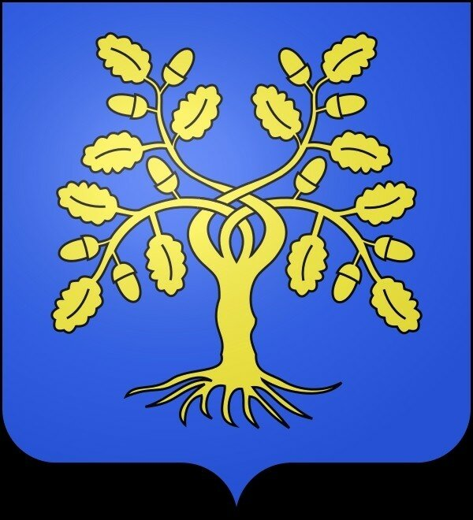
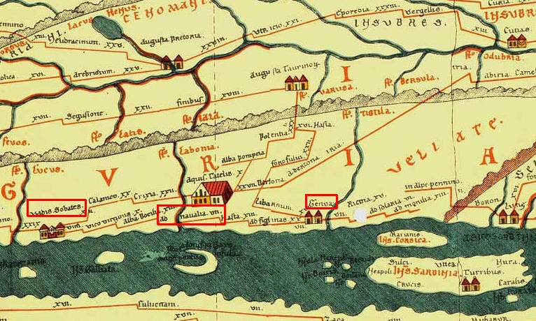
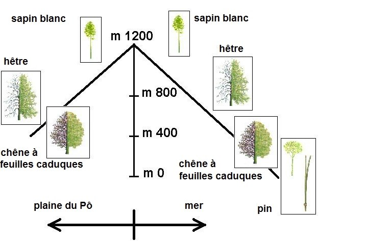
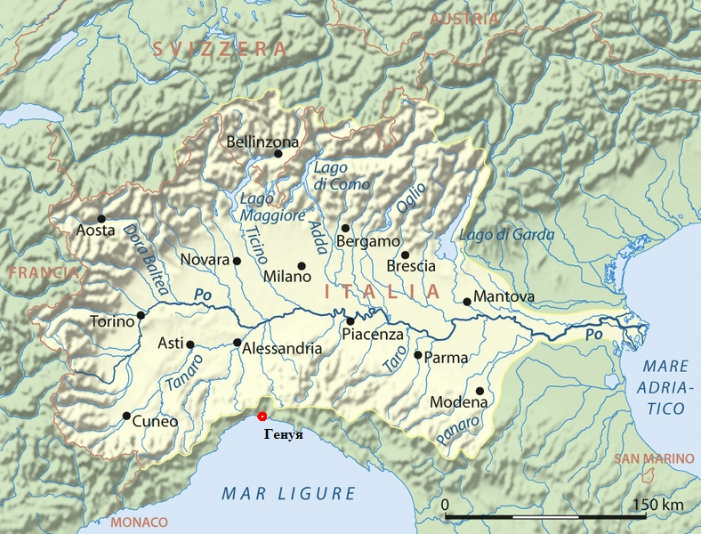
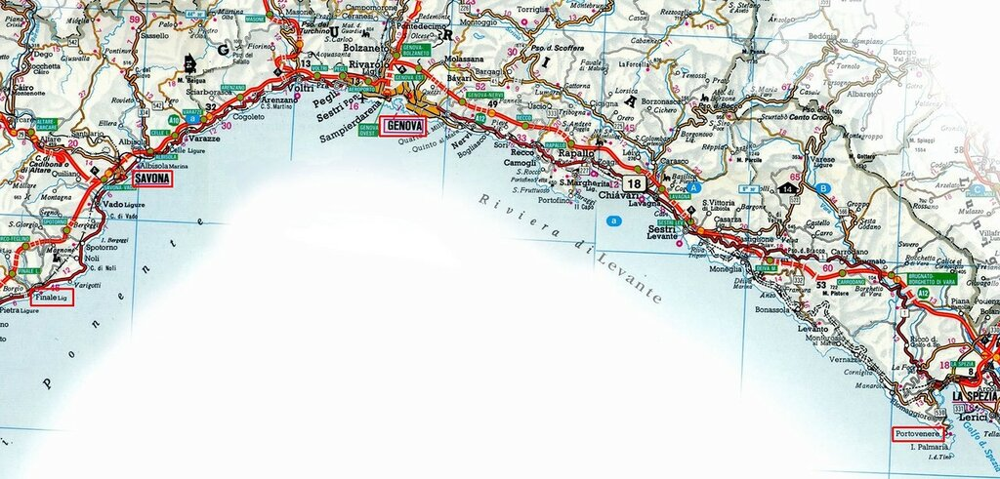
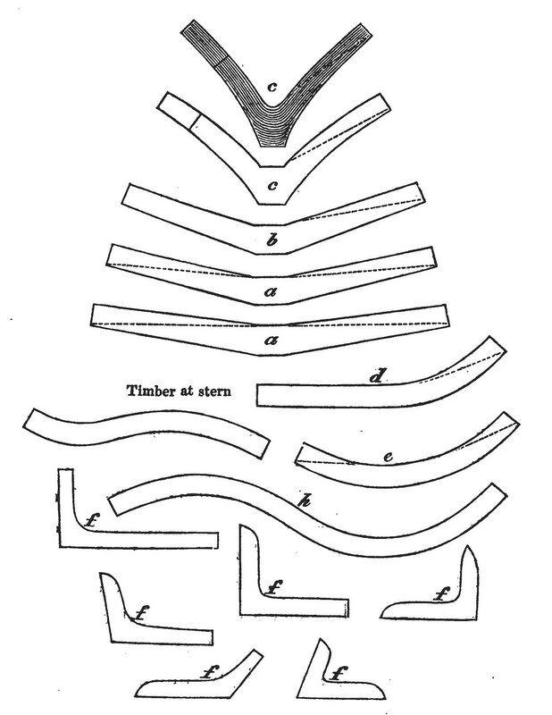
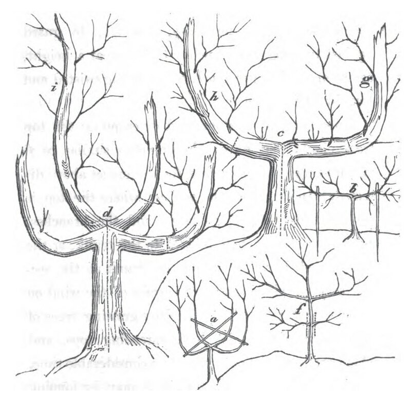
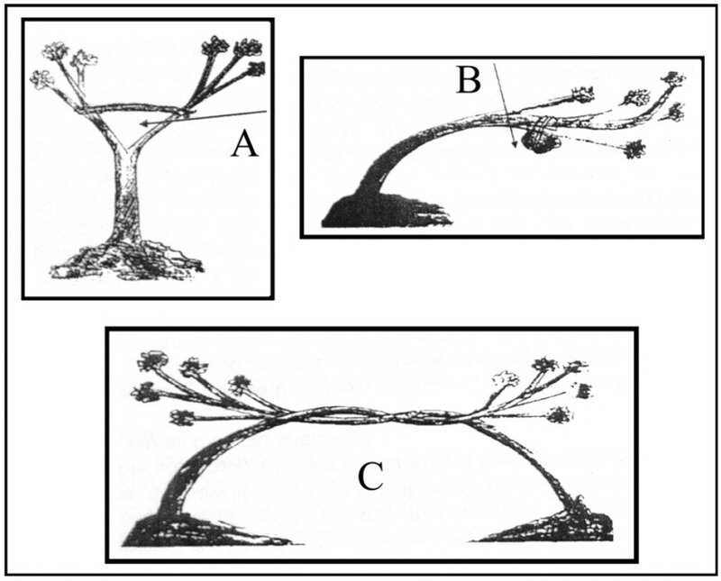

Корабельные леса и кораблестроение в Генуе
Словно в Ноевом ковчеге,
Все в журнале вы найдете:
Двухголового верблюда,
Шляпку модную для тети,
Уголовную новеллу
В двести двадцать литров крови
И научную страничку ―
«Как выращивают брови»…
Саша Черный. «ИЛЛЮСТРИРОВАННОЙ РОССИИ»
В качестве введения в тему генуэзских галер мы коротко рассмотрели выше некоторые эпизоды морской истории Генуи XI-XII веков. Прежде чем продолжить этот рассказ дальше, остановимся на обзоре генуэзского кораблестроения той эпохи.

Герб Делла Ровере, семейства из Савоны. В лазуревом поле золотой дуб с переплетёнными ветвями.
Предыдущий пост мы закончили перечнем кораблей пизанского флота начала XII века. Нет никакого сомнения, что подобные корабли и суда находились в распоряжении и генуэзцев. Кораблестроение – отрасль сложная, она не может возникнуть здесь и сразу, требуется ряд условий для ее появления. Выяснением этих условий и сопутствующих обстоятельств мы и займемся сейчас.
Когда в первом рассказе о галерах Генуи мы цитировали сочинение Робера Лопеса о возникновении генуэзского капитализма, то привели мимоходом оценку состояния флота генуэзцев в X веке: не было, мол, тогда никакого флота. Это верно, но верно и другое: Лигурия не была чистым листом, на котором моряки не оставляли прежде следов своей деятельности. Чтобы убедиться в этом, взглянем на замечательный исторический документ – так называемую Пейтингерову таблицу (Tabula Peutingeriana), изображающий римские дороги периода Империи. И хотя дошедшая до нас копия относится к XIII веку, оригинал карты появился между I в. до н.э. и V веком н.э. (для тех, кто еще не сталкивался с этим чудесным источником очень рекомендую ознакомиться с ним хотя бы по статьям в Википедии – не пожалеете).
Нас, естественно, будет интересовать фрагмент этой карты, относящийся к Лигурии.

Пейтингерова таблица. Фрагмент. Австрийская национальная библиотека, Хофбург (Вена)
На карте мы видим два города (условное обозначение городов на этой карте – пара домиков): интересующая нас Генуя (Genua) и к западу от нее – Савона (Vadis Sobates), город, в котором прошла юность Христофора Колумба. Примерно посередине между ними находится место, обозначенное как ad navalia – «корабельная верфь».
Какие объективные условия стали причиной появления верфи именно в этом месте? Приморская равнина здесь постепенно поднимается вверх и достигает высот до 1500 метров над уровнем моря. А вместе с изменением высоты меняется и растительность. Если на равнине преобладают сосны, то на средних высотах самым распространенными деревьями становятся листопадные дубы, еще выше – бук, и наконец, на высоте более 1200 м – европейская или белая пихта. Затем, по мере спуска к долине реки По, виды растительности меняются в обратном порядке.

Схема изменения поясов растительности в Лигурии. Рисунок Francesco Murialdo
Следует отметить, что эти ресурсы корабельных лесов находятся совсем рядом с побережьем, белая пихта, например, в районе Финале растет на удалении всего 20 км от побережья. Их качество также очень высокое.

Долина реки По
Приведем оценку качества этих лесов в известном морском словаре Вахтина:
На северном берегу Средиземного моря также произрастает весьма хороший мачтовый лес, который из иностранных считается лучшим.
Наличие запасов корабельного леса и послужило основной причиной для возникновения в XII веке кораблестроительных верфей в таких районех Лигурии, как Генуя, Савона, Финале, а в XIII веке – в Портовенере, почти на границе с Тосканой.

Размещение корабельных верфей в Лигурии.
Местные ресурсы обеспечивали все потребности кораблестроителей: на подводную часть корпуса шел дуб, на надводную – бук; для обшивки использовалась пихта и сосна. Замечательным достоинством Лигурии была близость корабельных лесов к корабельным верфям. Была в достаточном количестве и такая необходимая для кораблестроения вещь, как лен (по традиции здесь конопатчики долгое время использовали льняную, а не пеньковую паклю), поблизости находилось и производство железных изделий – от гвоздей до якорей. (О корабельных лесах мы уже кое-что писали ранее, желающие могут обратиться к этим постам).
До нашего времени дошло значительное количество документов, относящихся к кораблестроительной практике того периода. В основном это были нотариально заверенные контракты на постройку судов. Самым древним из таких контрактов является документ, датированный 11 февраля 1190 года. В нем корабельный мастер обязуется построить bucio длиной 40 goe (приблизительно 30 м) и наибольшей шириной 4,25 м. Подписан контракт в Генуе, а предназначено судно клиенту из Ниццы.
Из контрактов мы можем узнать, что для постройки подводной части судна использовались листопадные дубы (дуб пушистый - Quercus pubescens, дуб черешчатый - Quercus robur, дуб скальный - Quercus petraea), которые упоминались под одним родовым именем rovere – дуб. Практически всегда набор корпуса делали из дуба. Важнейшая часть этого набора – шпангоуты, ребра корабля – назывались garbo.
Термин garbo, который часто встречается в генуэзских кораблестроительных документах, относящихся к XIII веку, имеет двойственное значение. И хотя в любом из этих значений он относится к набору корабля, но иногда трудно понять, идет ли речь о шаблоне, лекале для изготовления изогнутых элементов этого набора, либо о самих этих конструкционных элементах.

Garbo. Комплект шаблонов для некоторых элементов набора корпуса.
Ясно, что исходный материал для членов набора корпуса (члены – это вполне распространенный русский морской термин применительно к шпангоутам и другим элементам набора; например, у Даля: «Члены корабля, все составные части его, брусья.») должен был по размерам и форме как можно ближе к готовым элементам. Мы в наших рассказах уже говорили как-то, что для заготовки изогнутых частей для набора корпуса в лес снаряжалась бригада во главе с корабельным плотником, который на месте выбирал подходящие стволы для изготовления шпангоутов и других составных частей набора, после чего мастера доводили отобранные части до требуемых размеров. То есть мастера подбирали материал не по традиционным трем измерениям – длина, ширина и толщина, но и включали в критерии отбора такие показатели, как форма и кривизна. Получалось, что надо было искать материал по пяти измерениям. Но оказывается не всегда эта практика имела место. В генуэзском кораблестроении, в частности, предпочитали не искать garbo в лесу, а заранее выращивать их в специальных питомниках. Мы можем видеть примеры таких питомников в старинных трактатах. До XVI века выращиваемые в них деревья в документах называли ad garibum. Ниже приведен рисунок из сравнительно более позднего наставления, но описания этой практики встречаются и в более ранних документах.

Рисунок из книги P. Matthew On naval timber and arboriculture
В таких трактатах содержался свод правил по уходу за посадками с целью получения материала требуемой формы. Ясно, что такая процедура требовала значительного времени. Начинать работу надо было с трех- четырехлетними растениями, а результата дожидаться как минимум пятнадцать-двадцать лет. В такой продолжительности процесса некоторые исследователи видят истоки консерватизма в средневековом кораблестроении: для постройки новых кораблей использовались те формы его корпуса, которые заложены были четверть века назад.
Выращиванием и заготовкой древесины, необходимой для набора корпуса корабля, занимались специальные люди. В архиве Савоны сохранился документ 1259 года, в котором некие мастера обязуются поставить лесоматериал для набора корабля, в том числе matera garibata, первые футоксы для шпангоутов, выращенные, как представляется, искусственно. В дальнейшем в местном законодательстве появились статьи, налагавшие серьезное наказание (штраф от 50 до 100 лир и тюремное заключение от двух до пяти лет) за вырубку дубов в питомниках. Запрещалась также заготовка ветвей, оставшихся на пнях после вырубки garbo . Пни не выкорчевывались, а из корневой поросли выгоняли новые стволы. Это было быстрей и эффективней, чем выращивать новые дубы из желудей. Для дубовых питомников появилось даже специальное название – rovereto.
Выращивание garbo в специальных питомниках давало значительные конкурентные преимущества генуэзским кораблестроителям. Эта технология позволяла экономить деньги, снижать отходы, получать более качественный, прочный и гибкий материал для корабельного набора. Правда, мы с точностью не можем судить, насколько далеко в прошлое проникала эта технология: самые ранние дошедшие до нас литературные свидетельства о ней относятся к XIII веку.
То, что организация питомников по выращиванию заранее сформированных дубовых стволов для кораблестроения было общей практикой, можно судить по сохранившимся изобразительным свидетельствам. К ним, несомненно, относится и герб семейства делла Ровере (rovere, как мы уже знаем, означает дуб), приведенный в начале поста. Или вот эти иллюстрации из старинного манускрипта, показывающие различные способы формирования заготовок требуемой кривизны

Продолжим тему в следующий раз.